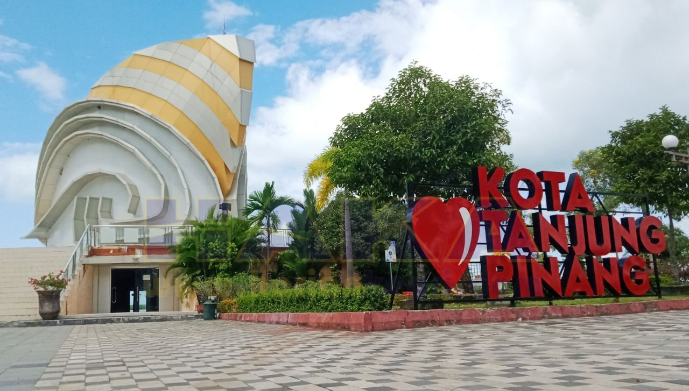
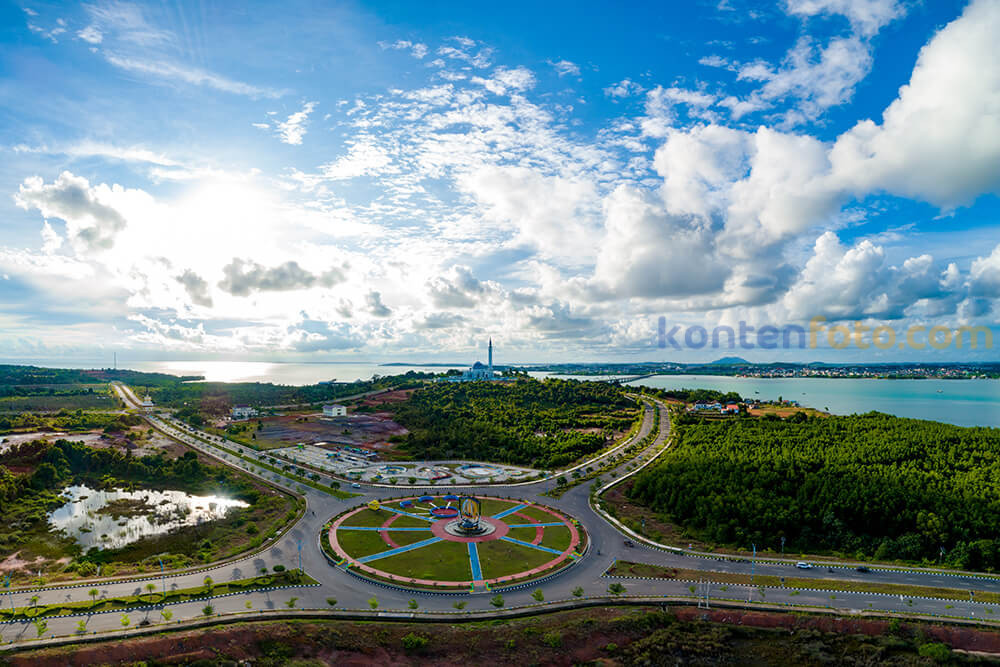

Sejarah

Nama Tanjungpinang sendiri diambil dari posisinya yang menjorok ke laut yang oleh orang Melayu disebut Tanjung. Tanjung tersebut ditumbuhi oleh pohon Pinang, pohon pinang tersebut kemudian menjadi tanda bagi pelayar yang akan memasuki kawasan sungai Bintan atau Hulu Riau.
Tanjungpinang semakin berkembang menjadi Bandar perdagangan terutama saat dipimpin oleh Raja Haji Fisabilillah sebagai Yang Dipertuan Mudanya. Namun pada tahun 1782- 1784 terjadi “Perang Riau” antara Kerajaan Riau – Lingga-Johor-Pahang dengan VOC Belanda. Puncaknya terjadi pada tanggal 6 Januari 1784 dimana Kerajaan Riau dibawah pimpinan Raja Haji Fisabilillah berhadil memukul mundur pasukan Belanda yang ditandai dengan dimusnahkannya kapal Komando Belanda “ Malaka’s Walfarent di teluk Riau atau daerah tersebut dikenal dengan sebutan “Jangoi” atau Pulau Paku. Kejadian tersebut mengakibatkan Belanda menarik mundur semua pasukannya dari perairan Riau ke basisnya di Malaka. Kemudian peristiwa 6 Januari tersebut diabadikan sebagai Hari Jadi Tanjungpinang.
Pada tanggal 18 oktober 1983 pemerintah mengeluarkan Peraturan Pemerintah Nomor 31 tahun 1983 yang menetapkan Kota Tanjungpinang sebagai Kota Administratif. Kemudian pada tahun 2001 sesuai dengan Undang – undang nomor 5 tahun 2001, Kota Administratif Tanjungpinang menjadi Kota Tanjungpinang. Dan saat ini Kota Tanjungpinang menjadi Ibukota Propinsi Kepulauan Riau.
Geografis

Tanjungpinang adalah Ibu kota Provinsi Kepulauan Riau, terletak di Pulau Bintan, pada koordinat 00 50’ 25.93” s/d 00 58’ 54.62” Lintang Utara dan 1040 23’ 23.40” s/d 1040 34’ 49.9” Bujur Timur. Posisi Tanjungpinang sangat strategis, karena berdekatan dengan Kota Batam sebagai salah satu pintu gerbang perdagangan Indonesia dan Kawasan Perdagangan Bebas (free trade zone).
Luas wilayah kota Tanjungpinang mencapai 258,82 km2, yang terdiri dari 150,86 Km2 daratan dan 107,96 km2 lautan dengan keadaaan geologis sebagian berbukit- bukit dan lembah yang landai sampai ke tepi laut.
Wisata
Ada banyak wisata Tanjungpinang yang menarik perhatian. Selain wisata taman, masih banyak keindahan alam Tanjungpinang yang tak boleh dilewatkan. Mengutip dari laman resmi BPK Kepri, Kota Tanjungoinang memiliki sejumlah pulau. Ada Pulau Penyengat, Pulau Terkulai, Pulau Dompak, Pulau Los, Pulau Setakap, Pulau Basing, dan Pulau Bayan. Selain itu, Kota Tanjungpinang juga terkenal dengan letaknya yang strategis. Kota ini sangat berdekatan dengan Kota Batam, Singapura, Samudra Hindia, dan Laut Cina Selatan.
Simak daftar rekomendasi wisata Tanjungpinang, yuk!
Pulau Penyengat

Pulau Penyengat merupakan salah satu objek wisata di Kepulauan Riau. Di pulau ini terdapat berbagai peninggalan bersejarah yang di antaranya adalah Masjid Raya Sultan Riau yang terbuat dari putih telur, makam-makam para raja, makam dari pahlawan nasional Raja Ali Haji, kompleks Istana Kantor dan benteng pertahanan di Bukit Kursi.
Pulau Penyengat (atau Pulau Penyengat Inderasakti dalam sebutan sumber-sumber sejarah) adalah sebuah pulau kecil di Kota Tanjungpinang, Kepulauan Riau, yang berjarak kurang lebih 2 km dari pusat kota. Pulau ini berukuran panjang 2.000 meter dan lebar 850 meter, berjarak lebih kurang 35 km dari Pulau Batam. Pulau ini dapat ditempuh dari pusat Kota Tanjung Pinang dengan menggunakan perahu bermotor atau lebih dikenal pompong yang memerlukan waktu tempuh kurang lebih 15 menit.
Taman Gurindam 12

Taman Gurindam 12 juga menyediakan berbagai wahana bermain yang dapat dinikmati oleh kalangan anak - anak hingga dewasa. Diantara wahana yang bisa dimainkan adalah sepeda listrik dan odong - odong listrik. Pengunjung hanya perlu membayar 20 ribu per 30 menit untuk sepeda listrik dan 30 ribu per 15 menit untuk odong - odong listrik.
Selain wahana bermain, berbagai kuliner juga bisa dinikmati di Taman Gurindam 12 ini. Ada bakso bakar, martabak telor, aneka gorengan, minuman kekinian hingga makanan khas tanah melayu bisa ditemui di sepanjang objek wisata ini. Tak heran dari sore hingga malam hari tempat ini selalu ramai apalagi di waktu akhir pekan.
Taman Gurindam 12 kini menjadi ikon baru di kota Tanjungpinang. Disamping memberikan pengalaman yang menarik untuk wisatawan, objek wisata ini juga dapat meningkatkan perekonomian khususnya bagi para pelaku umkm.